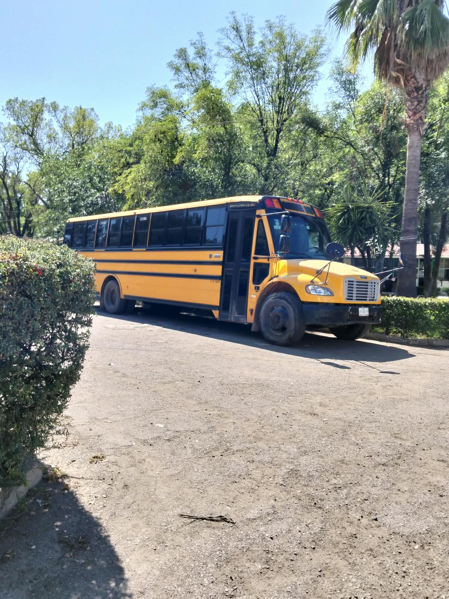
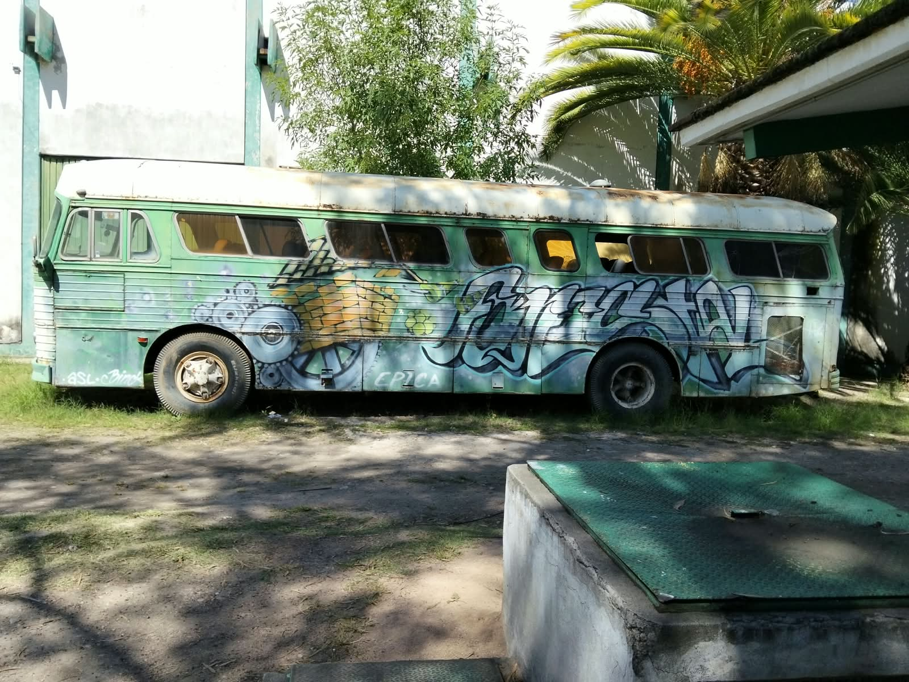
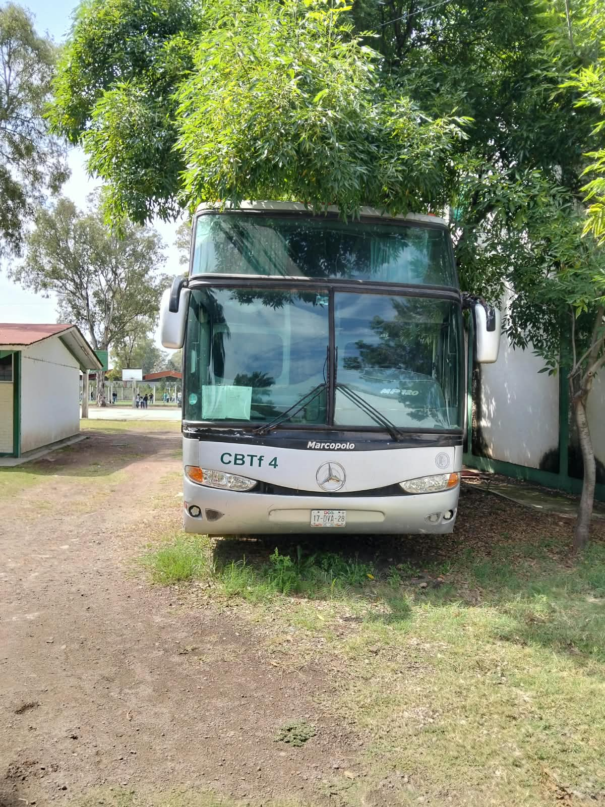
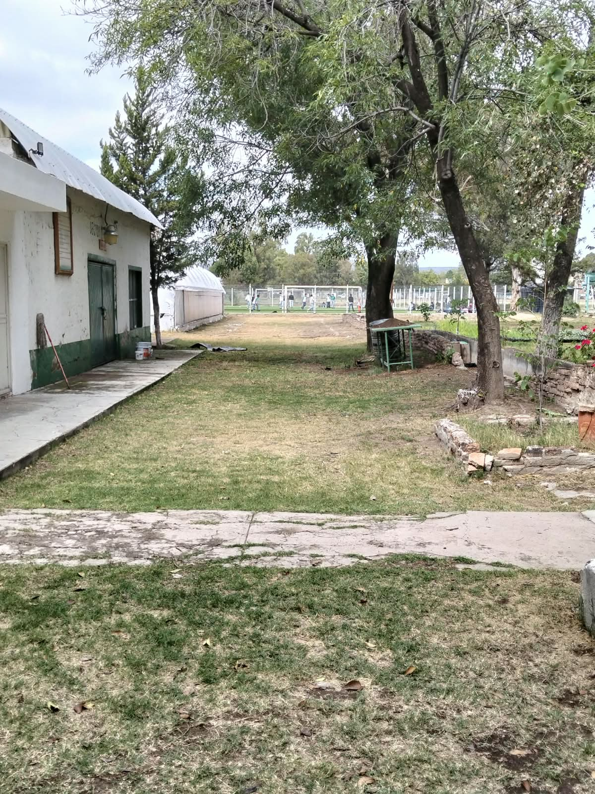
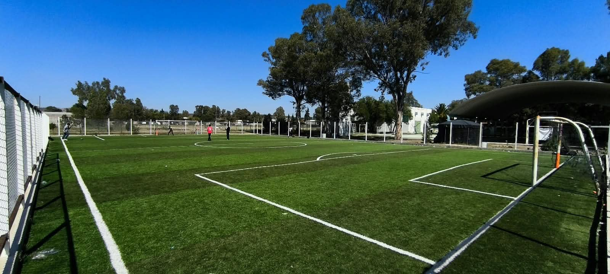
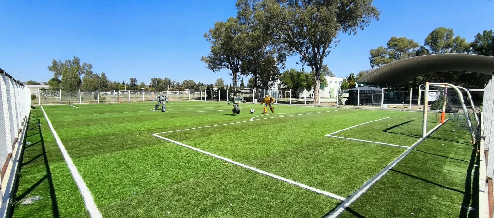
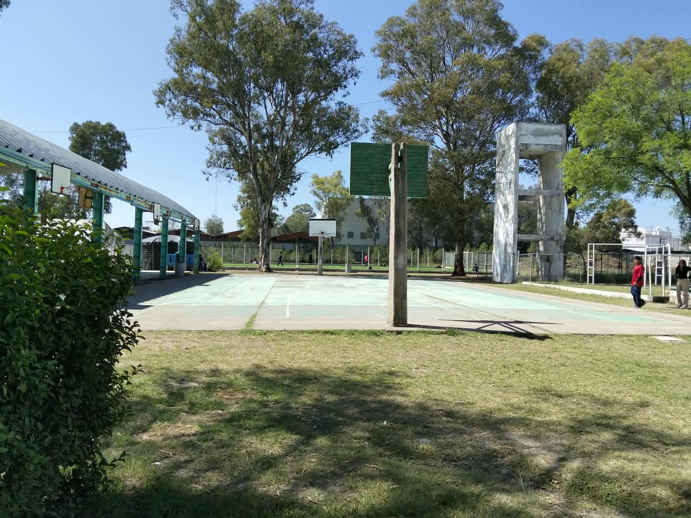
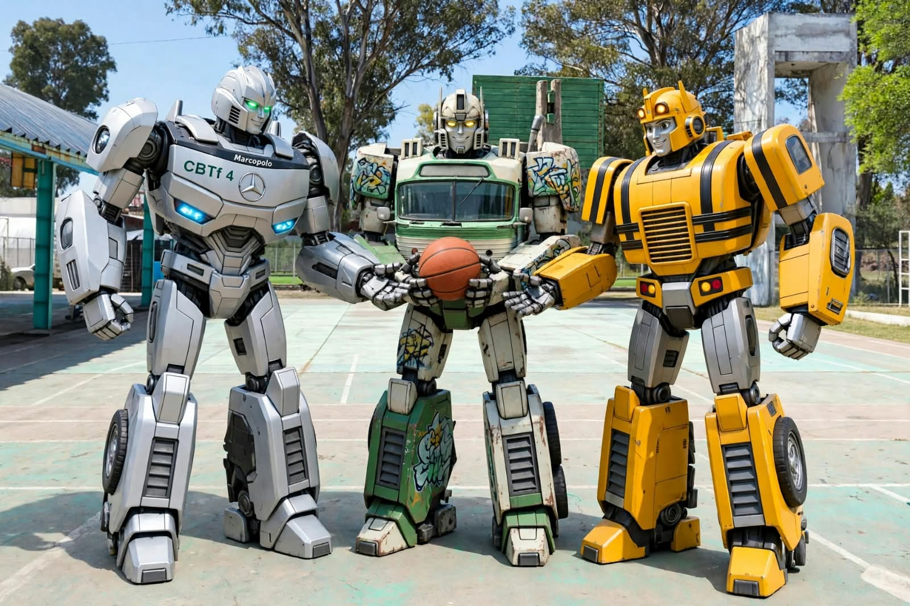
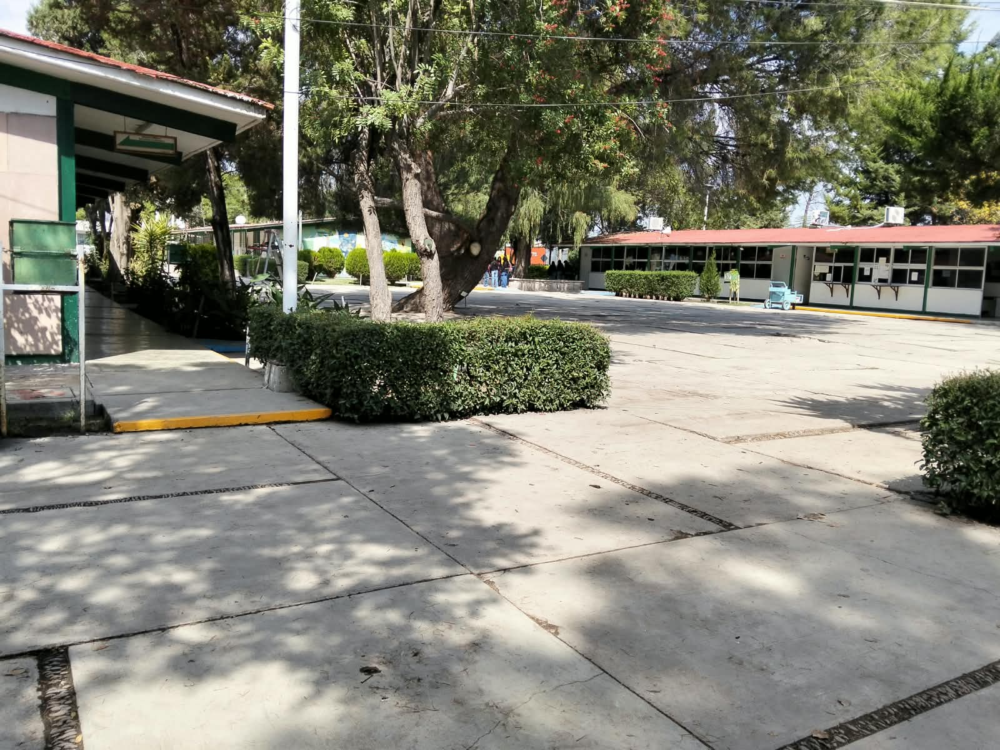

habia un camioncito amarillo

y un camioncito mas viejito

y claro no podia faltar el nuevo

cuando entraban a la prepa, entraban por la parte de atras

si querin jugar hiban a la cancha de futbol

se ponen a jugar los tres camioncitos del cb

y si querian jugar basquetball

se hiban a jugar los tres a la cancha de basquet

cuando terminaban se hiban a dar un recorrido por la prepa